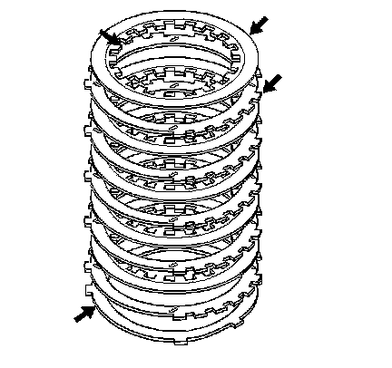
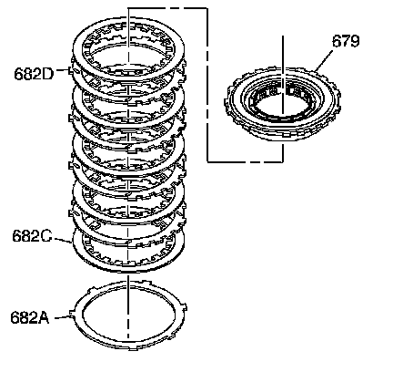
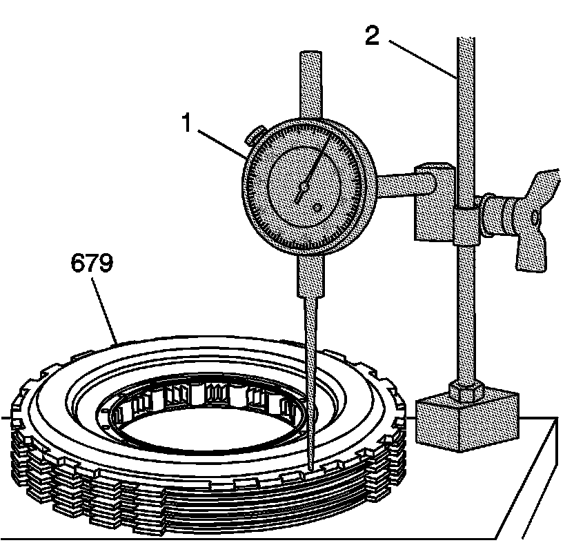
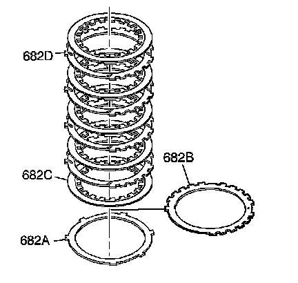

Low and Reverse Clutch Spacer Plate Selection
Low and Reverse Clutch Spacer Plate Selection
Tools Required
^ J 8001 Dial Indicator Set
^ J 26900-13 Magnetic Indicator Base

1. Inspect the low and reverse clutch plates for the following conditions:
^ Composition material wear
^ Composition material heat damage
^ Composition material delamination
^ Steel plates heat damage
^ Steel plates surface finish damage

2. Stack the low and reverse clutch plate assembly on a flat surface in the following order:
1. One waved plate (682A)
2. Five fiber plate assemblies (682C) and four steel plates (682D), starting with one fiber plate assembly and alternating with steel
3. Low and reverse clutch support (679)

3. Using the J 8001 (1) and the J 26900-13 (2), measure the height of the clutch pack from the work surface to the top of the low and reverse clutch support (679).
4. Refer to Low and Reverse Clutch Spacer Plate Selection in order to select the proper thickness of the low and reverse clutch selective spacer plate (682B).

5. Install the proper selective spacer plate (682B) between the wave plate (682A) and the first fiber plate assembly (682C), with the identification side up.
The overall height for the clutch pack including the selective spacer plate should be 29.23-29.90 mm (1.15-1.18 in).